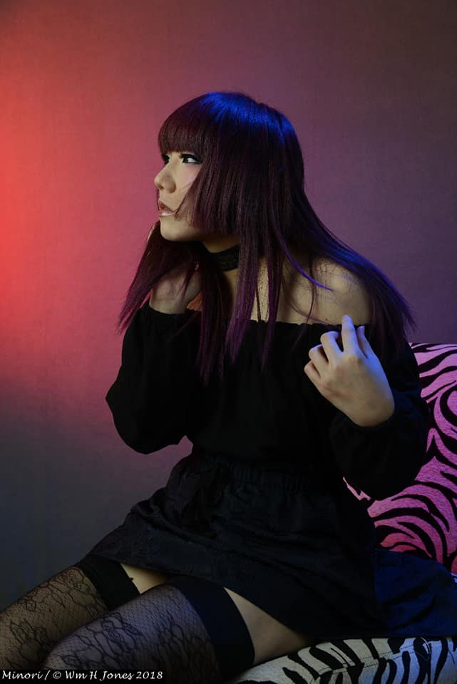

Hello! The name is Violet.
I am a 2014 UW Bothell Alumni. I graduated with a Bachelors degree in Culture, Literature, and the Arts. I have a variety of passions and ambitions ranging from fine arts to politics. Technology and coding is also one of them, hence this website serves as a showcase of what I have been working on throughout my time in UW's Coding Full-stack Web Development course.
I currently work in full-time management within the same company for 3 years - I am proud of my hard work as I have worked from the bottom up. As for additional fun facts about myself: I do glamour modeling work on the side. I have a creative mind that extends to collaborations with photographers in order to produce ideas and images that I've conceptualized.
I was born in Seattle and have resided in Washington my whole life. I love blogging and content creating, watching beauty and skincare videos, baking, and traveling solo! I'm always restless and need something to do so you will never find me having no time on my hands! I try to keep my lifestyle fine-tuned and hope this translates into my coding work presented here.